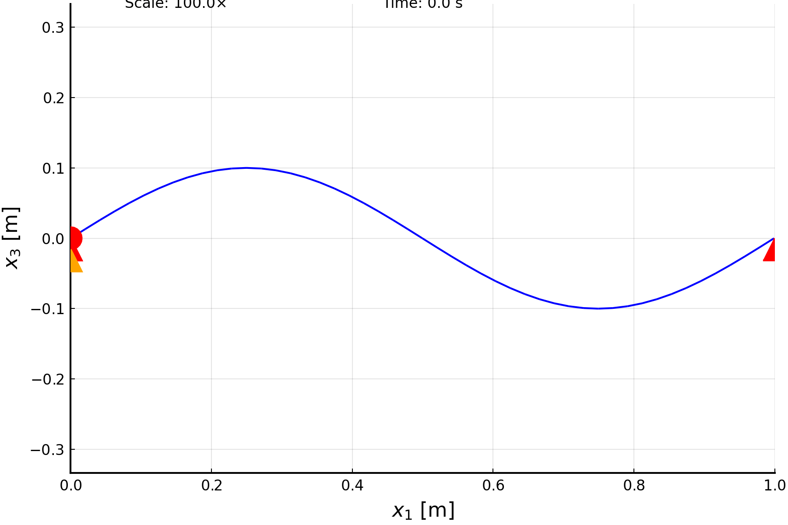

Motion of a simply supported beam under initial conditions
This example illustrates how to set up a dynamic analysis with initial conditions. To do that, we take a simply supported beam under a specified combination of sinusoidal initial displacement and velocity.
The code for this example is available here.
Initial conditions
The setup of our problem begins by specifying the initial conditions, defined by the variable initialConditions. These could theoretically be defined by the displacement (u3), the angle of rotation (θ2), or both. However, experience shows that the most accurate results are found with the first option. The displacement and rotation (and their time rates) correspond to those of a simply supported beam's second bending mode shape. Notice that θ2 is the angle of rotation over the beam's arclength coordinate (x1) and p2 is the corresponding Wiener-Milenkovic rotation parameter.
using AeroBeams
# Select initial conditions as either "displacement", "rotation" or "both"
initialConditions = "displacement"
# Initial conditions: sinusoidal displacement and velocity of u3 and/or rotation of θ2
δ = 1e-3
σ = 1e-1
u3 = x1 -> δ*sin.(2π*x1/L)
θ2 = x1 -> -δ*2π/L*cos.(2π*x1/L)
p2 = x1 -> 4*tan.(θ2(x1)/4)
udot3 = x1 -> σ*sin.(2π*x1/L)
θdot2 = x1 -> -σ*2π/L*cos.(2π*x1/L)
pdot2 = x1 -> sec.(0/4).^2 .* θdot2(x1)Beam
We create a simple isotropic beam for this example. The only relevant properties are the beam's length (L), bending stiffness (EI) and mass per unit length (ρA). The initial conditions are appended to the beam accordingly, and it is later updated (to incorporate those conditions) with the function update_beam!.
# Beam
L = 1
EI = 1
ρA = 1
∞ = 1e4
nElem = 48
beam = create_Beam(name="beam",length=L,nElements=nElem,S=[isotropic_stiffness_matrix(∞=∞,EIy=EI)],I=[inertia_matrix(ρA=ρA)])
if initialConditions == "displacement"
beam.u0_of_x1=x1->[0; 0; u3(x1)]
beam.udot0_of_x1=x1->[0; 0; udot3(x1)]
elseif initialConditions == "rotation"
beam.p0_of_x1=x1->[0; p2(x1); 0]
beam.pdot0_of_x1=x1->[0; pdot2(x1); 0]
elseif initialConditions == "both"
beam.u0_of_x1=x1->[0; 0; u3(x1)]
beam.p0_of_x1=x1->[0; p2(x1); 0]
beam.udot0_of_x1=x1->[0; 0; udot3(x1)]
beam.pdot0_of_x1=x1->[0; pdot2(x1); 0]
else
error("Wrong initialConditions")
end
update_beam!(beam)Boundary conditions
The beam is simply-supported: pinned at one end and with a roller at the other.
# BCs
pin = create_BC(name="pin",beam=beam,node=1,types=["u1A","u2A","u3A","p1A","p3A"],values=[0,0,0,0,0])
roller = create_BC(name="roller",beam=beam,node=nElem+1,types=["u3A"],values=[0])Model
Our model consists of the beam and the associated boundary conditions. Notice that gravity is neglected.
# Model
initialDispAndVelBeam = create_Model(name="initialDispAndVelBeam",beams=[beam],BCs=[pin,roller])Creating the dynamic problem
The time and frequency variables of our problem are defined by the beam's second bending mode frequency, ω2, whose analytical value is known. We'll run the simulation for one cycle, and with a time step one hundredth of that.
# Time and frequency variables
ω2 = (2π/L)^2*sqrt(EI/ρA)
T = 2π/ω2
cycles = 1
tf = cycles*T
Δt = T/100In initial conditions problems, in general we do not know the initial values of all the states of the formulation (displacements, rotations, internal loads and sectional velocities). Thus, we have to estimate the unknown states in the initial step, most importantly the velocities and their rates. The whole simulation is dependent on the accuracy of that estimation, which can be controlled through the dynamic problem's keyword argument initialVelocitiesUpdateOptions. We create an instance of such a variable using the constructor InitialVelocitiesUpdateOptions. The most important arguments of that are the maximum number of iterations (for which the best value is often 2), maxIter, the relaxation factor (for which the best value is often 0.5), relaxFactor, and the time step (for which the best value is problem-dependent, but has to smaller than the time step of the problem itself), Δt.
# Initial velocities update options
if initialConditions == "displacement"
initialVelocitiesUpdateOptions = InitialVelocitiesUpdateOptions(maxIter=2,displayProgress=true, relaxFactor=0.5, Δt=Δt/1e3)
elseif initialConditions == "rotation"
initialVelocitiesUpdateOptions = InitialVelocitiesUpdateOptions(maxIter=2, tol=1e-8, displayProgress=true, relaxFactor=0.5, Δt=Δt/1e3)
elseif initialConditions == "both"
initialVelocitiesUpdateOptions = InitialVelocitiesUpdateOptions(maxIter=2, displayProgress=true, relaxFactor=0.5, Δt=Δt/1e3)
endNow we can create the problem and solve it.
# Create and solve the problem
problem = create_DynamicProblem(model=initialDispAndVelBeam,finalTime=tf,Δt=Δt,initialVelocitiesUpdateOptions=initialVelocitiesUpdateOptions)
solve!(problem)Post-processing
First, we unpack the numerical solution of our variables of interest and compute analytical values.
# Unpack numerical solution
t = problem.timeVector
tNorm = t/T
u3_quarter = [problem.nodalStatesOverTime[i][div(nElem,4)].u_n2[3] for i in 1:length(tNorm)]
V3_quarter = [(problem.elementalStatesOverTime[i][div(nElem,4)].V[3]+problem.elementalStatesOverTime[i][div(nElem,4)+1].V[3])/2.0 for i in 1:length(tNorm)]
Vdot3_quarter = [(problem.elementalStatesRatesOverTime[i][div(nElem,4)].Vdot[3]+problem.elementalStatesRatesOverTime[i][div(nElem,4)+1].Vdot[3])/2.0 for i in 1:length(tNorm)]
θ2_root = [problem.nodalStatesOverTime[i][1].θ_n1 for i in 1:length(tNorm)]
Ω2_mid = [(problem.elementalStatesOverTime[i][div(nElem,2)].Ω[2]+problem.elementalStatesOverTime[i][div(nElem,2)+1].Ω[2])/2.0 for i in 1:length(tNorm)]
Ωdot2_mid = [(problem.elementalStatesRatesOverTime[i][div(nElem,2)].Ωdot[2]+problem.elementalStatesRatesOverTime[i][div(nElem,2)+1].Ωdot[2])/2.0 for i in 1:length(tNorm)]
# Compute analytical values
u3_quarter_analytic = δ*cos.(ω2*t)*sin(2π*1/4) + σ/ω2*sin.(ω2*t)*sin(2π*1/4)
V3_quarter_analytic = -δ*ω2*sin.(ω2*t)*sin(2π*1/4) + σ*cos.(ω2*t)*sin(2π*1/4)
Vdot3_quarter_analytic = -δ*ω2^2*cos.(ω2*t)*sin(2π*1/4) + -σ*ω2*sin.(ω2*t)*sin(2π*1/4)
θ2_root_analytic = -δ*2π/L*cos.(ω2*t)*cos(2π*0) + -σ*2π/L/ω2*sin.(ω2*t)*cos(2π*0)
Ω2_mid_analytic = δ*2π/L*ω2*sin.(ω2*t)*cos(2π*1/2) + -σ*2π/L*cos.(ω2*t)*cos(2π*1/2)
Ωdot2_mid_analytic = δ*2π/L*ω2^2*cos.(ω2*t)*cos(2π*1/2) + σ*2π/L*ω2*sin.(ω2*t)*cos(2π*1/2)Now let's plot the displacement, rotation, velocities and accelerations at the appropriate points of the beam. The correspondance with the analytical reference is very good, except for the angular acceleration at the midpoint, which oscillates around the analytical solution. That indicates the estimation of the initial value of that variable was not accurate, which may happen for the rates of the velocity states ($\dot{V}$ and $\dot{\Omega}$).
using Plots
gr()
# Displacement at quarter-length
plt1 = plot(xlabel="\$t/T\$", ylabel="\$u_3\$ at \$x_1=L/4\$ [m]")
plot!(tNorm,u3_quarter, c=:black, lw=2, label="AeroBeams")
scatter!(tNorm[1:5:end],u3_quarter_analytic[1:5:end], c=:blue, ms=5, msw=0, label="Analytical")
# Velocity at quarter-length
plt2 = plot(xlabel="\$t/T\$", ylabel="\$V_3\$ at \$x_1=L/4\$ [m/s]")
plot!(tNorm,V3_quarter, c=:black, lw=2, label="AeroBeams")
scatter!(tNorm[1:5:end],V3_quarter_analytic[1:5:end], c=:blue, ms=5, msw=0, label="Analytical")
# Acceleration at quarter-length
plt3 = plot(xlabel="\$t/T\$", ylabel="\$\\dot{V}_3\$ at \$x_1=L/4\$ [m/\$s^2\$]")
plot!(tNorm,Vdot3_quarter, c=:black, lw=2, label="AeroBeams")
scatter!(tNorm[1:5:end],Vdot3_quarter_analytic[1:5:end], c=:blue, ms=5, msw=0, label="Analytical")
# Rotation at root
plt4 = plot(xlabel="\$t/T\$", ylabel="\$\\theta/(2\\pi)\$ at \$x_1=0\$")
plot!(tNorm,θ2_root/(2π), c=:black, lw=2, label="AeroBeams")
scatter!(tNorm[1:5:end],θ2_root_analytic[1:5:end]/(2*π), c=:blue, ms=5, msw=0, label="Analytical")
# Angular velocity at mid-length
plt5 = plot(xlabel="\$t/T\$", ylabel="\$\\Omega_2\$ at \$x_1=L/2\$ [rad/s]")
plot!(tNorm,Ω2_mid, c=:black, lw=2, label="AeroBeams")
scatter!(tNorm[1:5:end],Ω2_mid_analytic[1:5:end], c=:blue, ms=5, msw=0, label="Analytical")
# Angular acceleration at mid-length
plt6 = plot(xlabel="\$t/T\$", ylabel="\$\\dot{\\Omega}_2\$ at \$x_1=L/2\$ [rad/\$s^2\$]")
plot!(tNorm,Ωdot2_mid, c=:black, lw=2, label="AeroBeams")
scatter!(tNorm[1:5:end],Ωdot2_mid_analytic[1:5:end], c=:blue, ms=5, msw=0, label="Analytical")
Finally, we can visualize the motion of the beam using the function plot_dynamic_deformation with the appropriate inputs.
# Animation
plot_dynamic_deformation(problem,scale=1/δ/10,scalePos=[0.15;-0.05;0],timeStampPos=[0.5;-0.05;0],plotFrequency=1,plotLimits=([0,L],[-L/2,L/2],[-L/3,L/3]),save=true,savePath="/docs/build/literate/initialDispAndVelBeam_motion.gif")
This page was generated using Literate.jl.